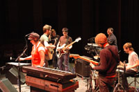

The Cleveland Music Scene
What's happening in music around town.
Check out the calendars, forums and venues listed here.
Welcome to Crooked River Groove
Crooked River Groove (or CRG for short) is a college accredited record label. Located on Tri-C's Metro campus, the heart of the operation is it's talented staff & faculty, a lavish, 3,000-square-foot studio, complete with a state-of-the-art editing room and beautiful recording suite. Did we mention the polished wood floors and well tuned baby grand piano?
Students from the R.A.T. program at Tri-C record and produce talented artists who might not be able to afford to record elsewhere in an environment that is not just about sales.
Explore the site to find out more.

Recording Arts & Technology
“We make stuff that you listen to.”
The Recording Arts & Technology Program at Tri-C is the only recording-arts associate-degree program in Ohio. Students (from recent high school graduates to thirtysomething rockers seeking formal training) are prepped for entry-level positions in the audio industry. Degree-seeking students receive broad-based training in music recording and mixing, location sound, commercial production, audio for video and television, record production and live sound reinforcement.
Learn more about the R.A.T. program at Tri-C.